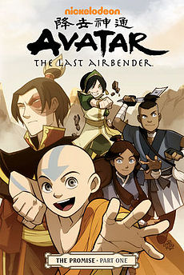
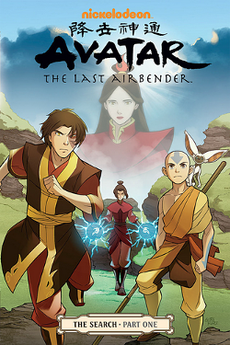
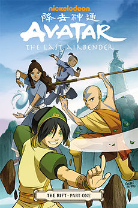
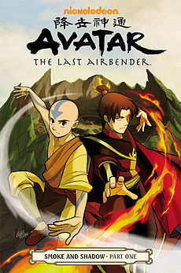
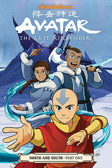

Avatar Comics |
The PromiseAlthough the one-hundred-year War is finally over, tensions run high as thirteen-year-old Avatar Aang and seventeen-year-old Zuko are put on a "collision course" after the Avatar travels to a Fire Nation colony named "Yu Dao", and finds "tension between neighbors" – a threat that may "shatter the world's newfound peace". The unfinished conversation between Zuko and Ozai about the whereabouts of Ursa, Zuko's long-lost mother, is completed, but the conversation takes a different path after Zuko asks the question and her fate still remains unknown. Zuko forces Aang to promise to kill him if he becomes like his father, the deposed Fire Lord Ozai.Negotiations with Earth King Kuei and the beginning of the Harmony Restoration Movement commence. The movement plans to take the people in the Fire Nation colonies and move them into the Fire Nation itself. However, an unexpected controversy breaks out, as the older colonies are composed of people who have never lived within the Fire Nation and have intermarried with Earth Kingdom citizens. These people view the movement as robbing them of their homes. Fire Lord Zuko is caught between the desires of his people and the demands of many who believe peace and balance is only attainable if fire nation citizens return to their country. When the Earth Kingdom army arrives to enforce the Restoration Movement, Zuko deploys his own forces in defense of the colonies, leading to an explosive showdown between the recently belligerent sides and threatening to reignite the fires of war. Aang must decide whether to follow through on his promise, and decide the fate of the colonies in the process. In the midst of this dispute, Toph's new metal bending school finds itself in trouble, while Aang is confronted with the "Avatar Fan Movement," a growing group of young individuals trying to live as the air nomads did, but Aang views these people as parodying and denigrating the memory of his people. |
The SearchThe Search focuses on the mystery surrounding Zuko and Azula's long-lost mother, Ursa. It reveals the details of former Princess Azula's imprisonment in a Fire Nation mental institution and the complexities of Fire Lord Ozai and Ursa's relationship. The main characters are the members of the Fire Nation family, particularly Zuko and Azula. Avatar Aang, Sokka, and Katara help the Fire Nation siblings to find their long lost mother. |
The RiftThe Rift shifts the focus back to a 14-year-old Avatar Aang as he begins the process of creating Republic City, in contrast to The Search, which is more focused on the story of the Fire Nation royal family. Aang also plans to give a larger role to Toph, who was absent from The Search trilogy. It is followed by Smoke and Shadow. As Avatar Aang and his friends are preparing for Yangchen’s Festival, an Air Nomad holiday that hasn’t been celebrated in over a century, Aang starts receiving cryptic visits from the spirit of Avatar Yanchgen herself. When these visits lead Aang to a refinery operating on the Air Nomads’ sacred land, the gang suspect that the refinery is responsible for polluting a nearby river. The gang decide to investigate the matter and quickly find themselves in a dangerous encounter with a malevolent spirit hell-bent on destroying the human world. |
Smoke and ShadowSmoke and Shadow returns attention to the state of the Fire Nation and its royal family, which were previously emphasized in The Promise and The Search. With the aid of Avatar Aang and his estranged ex-girlfriend Mai, Fire Lord Zuko must deal with the threat of the New Ozai Society, a group that seeks to overthrow him and restore his deposed father Fire Lord Ozai to the throne of the Fire Nation. Their conflict with the group is complicated by the fact that it is led by Mai's own estranged father, and appears to be in league with a group of malevolent spirits known as the Kemurikage. |
North and SouthAfter three long years, Katara and Sokka (along with Avatar Aang) finally return home to the Southern Water Tribe and are surprised but glad to see their homeland greatly expanded to the point of a bustling and thriving city with their father Hakoda as head chief. They learn that the source of these great changes is due to a strong waterbender from the Northern Water Tribe named Malina whose true motives remain shrouded in mystery. |